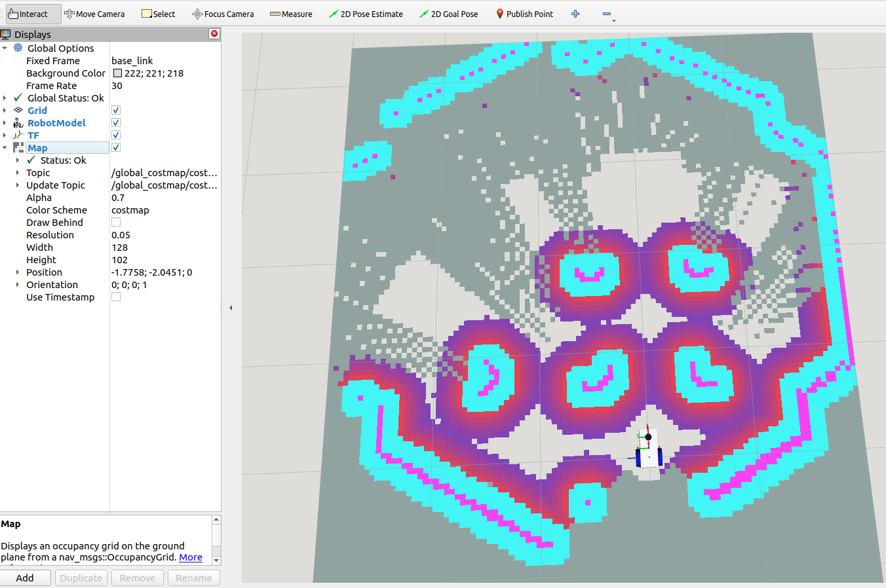

Adding Path Planning from Nav2
In the Nav2 Navigation Stack, the so-called Planner portion provides the general route from the start to the goal, whilst avoiding any known obstacles based on a map (path planning). The Controller is an algorithm to generate velocity commands to move the robot, as well as ensure it tries to follow the path and avoid obstacles. The Controller is therefore the most clever and most critical part of the navigation stack, we will cover that later.
For both the Planner and the Controller, each algorithm is suited to a particular design of robot, and may not support your configuration. For example, not all Planners and Controllers support Ackermann steering (like a car). You can check the full list of supported Planners and Controllers in the main documentation.
The Planner
The Planner server consists of a ROS Node, which is supplied with a start and end goal, and it computes a valid path between the two. A planner “plugin” actually computes the path, we have freedom on what plugin to choose, giving us flexibility over which algorithm(s) to use.
The default planner plugin in ROS is NavFn. It contains simple path planning algorithms, either Dijkstra or A* (typically A* is preferred). It is suitable for differential drive robots, therefore, suitable for our simulation.
Note
The NavFn (Navigation Function) package is based on the paper: Brock, O. and Oussama K. (1999). High-Speed Navigation Using the Global Dynamic Window Approach.
Practically every ROS package can trace its heritage back to academic papers.
Along side robot pose estimates, the Planner requires a “Global” Costmap (i.e. it covers the entire global area you would wish to navigate in), this is handled by the planner server as well. The data to make the costmap and provide the start and end poses are of course all communicated via various ROS topics.
Writing the Planner Config File
The format of the configuration is taken from the planner documentation. An example config file for the NavFn package would look like the file below. Copy this example into a file called planner.yaml in the config directory.
1planner_server:
2 ros__parameters:
3 expected_planner_frequency: 20.0
4 use_sim_time: True
5 planner_plugins: ["GridBased"]
6 GridBased:
7 plugin: "nav2_navfn_planner/NavfnPlanner"
8 tolerance: 0.5
9 use_astar: true
10 allow_unknown: true
If you look under plugin: "nav2_navfn_planner/NavfnPlanner", notice there are additional parameters (tolerance, use_astar, allow_unknown). These parameters are specific to NavFn as per its documentation. These options are explained in the table below.
Option |
Default Value |
Notes |
|---|---|---|
tolerance |
0.5 |
Tolerance in meters between requested goal pose and end of path. |
use_astar |
False |
Whether to use A*. If false, uses Dijkstra’s expansion. |
allow_unknown |
True |
Whether to allow planning in unknown space. |
Writing the Global Costmap Config File
For the Global Costmap, we can simply use our SLAM Map (as a static layer), an obstacle layer using the lidar to catch objects before the static map updates, and include an inflation layer based on the robot size. Edit the planner.yaml file where the NavFn parameters were added earlier to match the example below.
1planner_server:
2 ros__parameters:
3 expected_planner_frequency: 20.0
4 use_sim_time: True
5 planner_plugins: ["GridBased"]
6 GridBased:
7 plugin: "nav2_navfn_planner/NavfnPlanner"
8 tolerance: 0.5
9 use_astar: true
10 allow_unknown: true
11
12global_costmap:
13 global_costmap:
14 ros__parameters:
15 update_frequency: 1.0
16 publish_frequency: 1.0
17 global_frame: map
18 robot_base_frame: base_link
19 use_sim_time: True
20 # footprint: []
21 # footprint_padding: 0.01
22 robot_radius: 0.175
23 resolution: 0.06
24 track_unknown_space: true
25 always_send_full_costmap: True
26 plugins: ["static_layer", "obstacle_layer", "inflation_layer"]
27 obstacle_layer:
28 plugin: "nav2_costmap_2d::ObstacleLayer"
29 enabled: True
30 observation_sources: scan_source
31 scan_source:
32 topic: /scan
33 max_obstacle_height: 2.0
34 clearing: True
35 marking: True
36 data_type: "LaserScan"
37 raytrace_max_range: 3.0
38 raytrace_min_range: 0.0
39 obstacle_max_range: 2.5
40 obstacle_min_range: 0.0
41 static_layer:
42 plugin: "nav2_costmap_2d::StaticLayer"
43 map_subscribe_transient_local: True
44 map_topic: /map
45 inflation_layer:
46 plugin: "nav2_costmap_2d::InflationLayer"
47 cost_scaling_factor: 4.0
48 inflation_radius: 0.45
There are various parameters associated with the costmap (e.g. global_frame, use_sim_time, resolution) but also for each layer there are additional parameters. It is clearly visible which parameters below to which seciton by the indentation scheme that these xml format files use. For a full list of costmap parameters check out the costmap_2d github.
The footprint of the robot is used to calculate if a robot can fit through gaps, and as part of the inflation of the costmap based on physical size of the robot. It is possible to declare a specific polygon for the footprint of the robot (e.g. four points could define a rectangular chassis), however, to keep things conceptually simpler we will only deal with a radius.
Adding a Planner to a Launch File
Open the nav_demo.launch.py file and add the following lines.
1from ament_index_python.packages import get_package_share_directory
2from launch import LaunchDescription
3from launch.actions import IncludeLaunchDescription
4from launch_ros.actions import SetParameter, Node
5from launch.launch_description_sources import PythonLaunchDescriptionSource
6from launch.substitutions import PathJoinSubstitution
7
8
9def generate_launch_description():
10 ld = LaunchDescription()
11
12 # Parameters, Nodes and Launch files go here
13
14 # Declare package directory
15 pkg_nav_demos = get_package_share_directory('navigation_demos')
16 # Necessary fixes
17 remappings = [('/tf', 'tf'), ('/tf_static', 'tf_static')]
18
19 lifecycle_nodes = [
20 'planner_server',
21 'behaviour_server',
22 'bt_navigator',
23 ]
24
25 # LOAD PARAMETERS FROM YAML FILES
26 config_bt_nav = PathJoinSubstitution([pkg_nav_demos, 'config', 'bt_nav.yaml'])
27 config_planner = PathJoinSubstitution([pkg_nav_demos, 'config', 'planner.yaml'])
28
29 # Include Gazebo Simulation
30 launch_gazebo = IncludeLaunchDescription(
31 PythonLaunchDescriptionSource([get_package_share_directory('gz_example_robot_description'), '/launch', '/sim_robot.launch.py']),
32 launch_arguments={}.items(),
33 )
34
35 # Include SLAM Toolbox standard launch file
36 launch_slamtoolbox = IncludeLaunchDescription(
37 PythonLaunchDescriptionSource([get_package_share_directory('slam_toolbox'), '/launch', '/online_async_launch.py']),
38 launch_arguments={}.items(),
39 )
40
41 # Behaviour Tree Navigator
42 node_bt_nav = Node(
43 package='nav2_bt_navigator',
44 executable='bt_navigator',
45 name='bt_navigator',
46 output='screen',
47 parameters=[config_bt_nav],
48 remappings=remappings,
49 )
50
51 # Behaviour Tree Server
52 node_behaviour = Node(
53 package='nav2_behaviors',
54 executable='behavior_server',
55 name='behaviour_server',
56 output='screen',
57 parameters=[config_bt_nav],
58 remappings=remappings,
59 )
60
61 # Planner Server Node
62 node_planner = Node(
63 package='nav2_planner',
64 executable='planner_server',
65 name='planner_server',
66 output='screen',
67 parameters=[config_planner],
68 remappings=remappings,
69 )
70
71 # Lifecycle Node Manager to automatically start lifecycles nodes (from list)
72 node_lifecycle_manager = Node(
73 package='nav2_lifecycle_manager',
74 executable='lifecycle_manager',
75 name='lifecycle_manager_navigation',
76 output='screen',
77 parameters=[{'autostart': True}, {'node_names': lifecycle_nodes}],
78 )
79
80
81 # Add actions to LaunchDescription
82 ld.add_action(SetParameter(name='use_sim_time', value=True))
83 ld.add_action(launch_gazebo)
84 ld.add_action(launch_slamtoolbox)
85 ld.add_action(node_bt_nav)
86 ld.add_action(node_behaviour)
87 ld.add_action(node_planner)
88 ld.add_action(node_lifecycle_manager)
89
90 return ld
Note
What is this lifecycle manager thing? It allows for the nodes in the navigation stack to start in a set pattern. In ROS 1 in particular, nodes may have started in any old order, this could really cause problems. The lifecycle node system is a method to circumvent this annoying problem. You can find more technical details in the online docs.
Perform the usual colcon build, source install/setup.bash and check the launch file runs.
If everything is running correctly, in rviz it should be possible to view the global costmap topic similar to the image below (note that the specific colour palette comes from selecting “costmap” as the “Color Scheme”).
{kind=link}